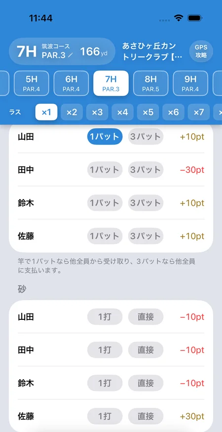

ゴルフ「竿」「砂」のルールと計算方法
SQORE編集部 ｜ 2026年11月3日更新
「竿」と「砂」は、握り（＝仲間内でポイントを競う定番ゲーム）に足して遊ぶ、グリーン周りの小さな勝負です。竿は1パットで沈めたら全員からもらい、3パットしたら全員に払う。砂はバンカーから出して1打、または直接入れたら全員からもらう。呼び名や細かい条件は仲間によって違うので、このページではアプリのSQOREでの決め方と計算方法をまとめます。
竿のルール
- そのホールを1パットで上がった人は、他の全員から決めたポイント（例: 10）を受け取ります。
- 3パットした人は、他の全員に同じポイントを払います。
- 同じホールで何人に付いても、それぞれのやり取りを足すだけ。全員の増減を合計すると、必ずゼロになります。
- 3パットで払うのをやめて、1パットだけで遊ぶ決め方もあります。
砂のルール
- バンカーから出して1打で入れた人（寄せワン）は、他の全員からポイントを受け取ります（例: 10）。
- バンカーから直接カップに入れた人は、もっと多いポイントを受け取ります（例: 20）。
- 砂には払う側の印はありません。付いた人がもらい、ほかの全員が払います。
計算例（4人・竿10ポイント・砂は1打10／直接20）
例1：Aさんが1パット
AさんがB・C・Dさんから10ずつ受け取ります。
→ A＝+30 / B＝−10 / C＝−10 / D＝−10（合計ゼロ）
例2：同じホールでAさんが1パット、Bさんが3パット
Aさんの1パット：A +30、B・C・D 各−10
Bさんの3パット：B −30、A・C・D 各+10
→ A＝+40 / B＝−40 / C＝0 / D＝0
例3：砂。1番でBさんが出して1打、2番でCさんが直接
1番：B +30、A・C・D 各−10
2番：C +60、A・B・D 各−20
→ A＝−30 / B＝+10 / C＝+50 / D＝−30（直接の点を50にすると A −60 / B −20 / C +140 / D −60）
始める前に決めておくこと
- 1回のポイント — 竿と砂（出して1打・直接）のそれぞれ。直接は出して1打より高くするのが一般的です。
- どの1パットを数えるか — 全部の1パットか、旗竿の長さより遠い時だけか、など。距離の条件はその場の取り決めです。
- 3パットで払うか — 払うなら1パットとの差が大きく動きます。初心者がいる組では1パットだけにする手もあります。
- OKパット（お先に）の扱い — OKをもらった分をパット数に入れるかどうか。
オリンピックにも「砂イチ」「竿イチ」というローカルルールがありますが、あちらはメダルに上乗せする加点です。詳しくはオリンピックのルールの加点ルールを見てください。
アプリなら印を押すだけで精算
スコア画面の「1パット」「3パット」「1打」「直接」を押すだけ
iPhone・AndroidアプリのSQOREでは、竿と砂をゲームとしてオンにすると、スコア画面に各自のボタンが並びます。付いた人のボタンを押せば、右にラウンドの合計がその場で出て、精算まで自動でまとまります。
1回のポイントは竿・出して1打・直接で別に決められ、3パットで払うかどうかも選べます。ラスベガスやオリンピックなどと同時に開催でき、途中からオンにすることもできます。パット数から自動で付くことはないので、取り決めに合う時だけ押してください。

よくある質問
ゴルフの「竿」とは？（SQOREのルール）
SQOREの「竿」は、1パットで沈めた人が他の全員から決めたポイントを受け取り、3パットした人は他の全員に同じポイントを払うゲームです。既定は1回10ポイント。3パットで払うのをやめて、1パットだけで遊ぶこともできます。
ゴルフの「砂」とは？（SQOREのルール）
SQOREの「砂」は、バンカーから出して1打で入れた人、またはバンカーから直接入れた人が、他の全員からポイントを受け取るゲームです。既定は出して1打が10ポイント、直接が20ポイントで、それぞれ変えられます。
どの距離からの1パットを竿に数えますか？
距離の条件は仲間内で先に決めておきます（旗竿の長さより遠い時だけ、など）。SQOREは距離を判定せず、スコア画面で押された印だけで計算します。パット数の入力から自動で付くことはありません。
同じホールで1パットと3パットが出たら？
両方のやり取りを足します。4人・10ポイントで、Aさんが1パット、Bさんが3パットなら、Aさん+40・Bさん−40・ほかの2人は±0です。全員の合計は必ずゼロになります。
オリンピックの「砂イチ」「竿イチ」とは何が違う？
オリンピックの砂イチ・竿イチは、メダルの点に上乗せする加点のローカルルールです。SQOREの竿・砂はそれとは別の独立したゲームで、オリンピックをしない日でも単独で遊べ、他のゲームと同時にも開催できます。
他の握りゲームと同時にできますか？
できます。ラスベガスやオリンピックなどと同時に開催でき、竿・砂のポイントもラウンドの合計に入ります。ラウンドの途中から竿・砂をオンにすることもできます。
竿・砂のやり取りもアプリにおまかせ
SQOREは竿・砂・ラスベガス・オリンピックなど定番ゲームのポイントを自動計算する無料アプリです。
ゲームをしない日はスコアアプリとしてそのまま使えます。いま打つホールの自分の平均スコアやOB率も出ます。